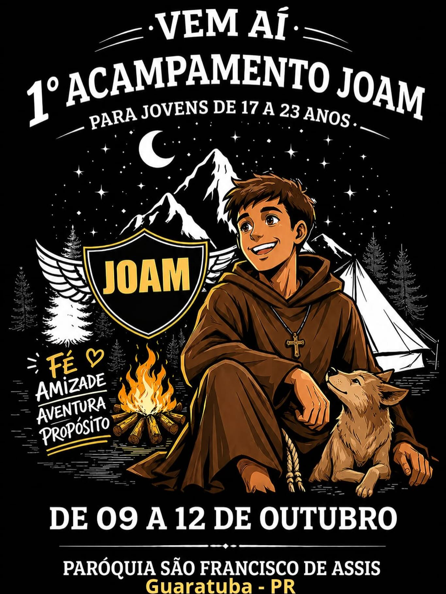
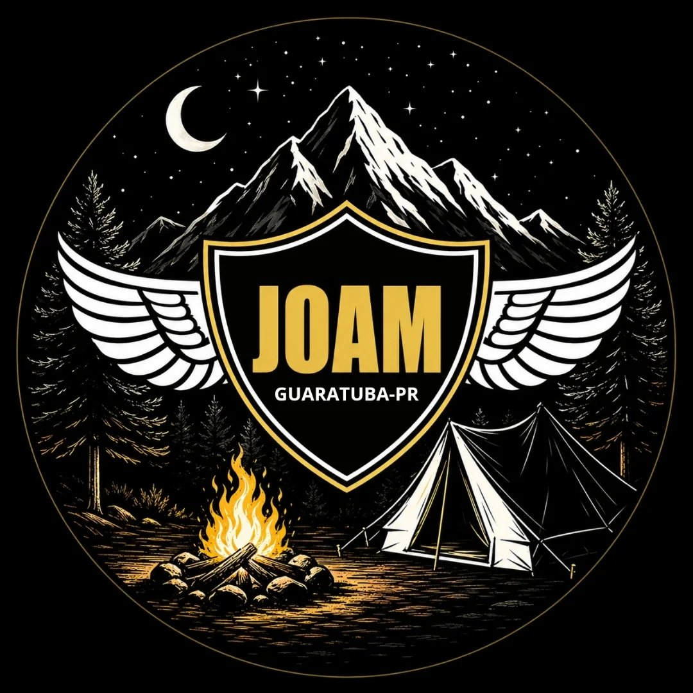

Fé, Amizade, Aventura e Propósito. Venha viver dias inesquecíveis na presença do Senhor.
O Acampamento é um momento forte de espiritualidade, autoconhecimento e encontro pessoal com Cristo. Através de dinâmicas, pregações e convívio fraterno, oferecemos uma experiência transformadora para todas as idades. Conheça nossos três acampamentos e prepare-se para os próximos eventos!


O JOAM é um chamado para a juventude viver a radicalidade do Evangelho. Se você está buscando um propósito maior, verdadeiras amizades e uma fé inabalável, este é o seu lugar. Venha viver essa aventura conosco!
A partir dos 12 anos. O FAC é uma experiência pensada especialmente para os adolescentes. Uma oportunidade de encontrar a alegria de ser de Deus de forma dinâmica, alegre e transformadora, construindo alicerces sólidos para a vida adulta.

O Acampamento Sênior é voltado para adultos que buscam reavivar sua fé, encontrar respostas e ter um encontro maduro e profundo com Deus. É um momento de parar a correria do dia a dia e se dedicar à espiritualidade.
Prepare-se para o nosso próximo Acampamento Sênior! Fique atento aos avisos e acompanhe nossas redes.